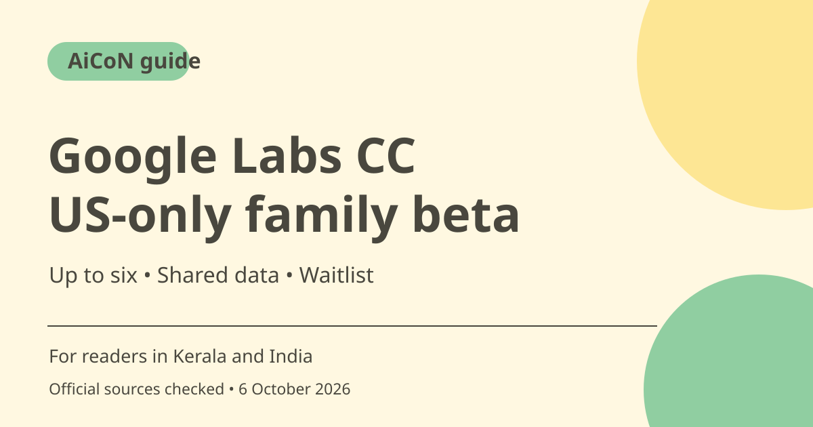

Google Labs CC for families: US-only access and privacy
Google Labs CC is an early household AI experiment for up to six members. Google's announcement limits access to adults in the US with personal Google accounts, with new users joining a waitlist. It is not an available family-assistant recommendation for Kerala or India today.

What changed in CC?
Google's September 2026 announcement describes a shift from personal daily planning to a shared agent for families and households. CC has its own Google account, giving it a separate identity and permissions. It is designed to organise shared information into a morning brief, calendar and task list. This guide reports Google's description rather than a personal test.
What can a household share?
Google says members choose what information CC sees, such as emails from a school, swim centre or vet. Each member's choice matters. Sharing one person's document with a household assistant is not automatically permission to share everybody's inbox or private medical details. Review who receives a brief and who can see the resulting shared documents.
The shared daily brief
The announcement describes a Your Day Ahead brief showing where people need to be, what needs doing and completed work from the previous day. Calendar and Tasks connect household logistics. A shared brief is useful only when names, times and source information are right. Check a school notice or appointment against the original before treating an AI summary as the final schedule.
Forms and other household tasks
Google describes assistance with activity forms, school-supply lists, meal plans and shared documents. Tasks that submit information or create commitments need particular care. Before a form is sent, verify the person, recipient, dates and facts, and make sure the relevant adult permits the action. Generating a draft does not mean a form has been accepted.
US-only eligibility and waiting
The official announcement says web and mobile access is for people aged 18 or over in the US with personal Google accounts. Existing users receive upgrade instructions, while new users can join a waitlist. India access and an expansion date were not established. Do not use a foreign address or a location workaround to misrepresent eligibility.
Price and experiment limits
The announcement does not state a consumer price or unlimited entitlement. A Labs experiment can have changing access and features. For a Kerala household, the practical lesson is to prepare a shared calendar and explicit sharing choices, not to assume CC can be activated now. Recheck the official page if eligibility expands.
How to use it, step by step
- Read the official Google announcement and open labs.google.com/cc through the verified route.
- Check that you meet the current age, country and personal-account conditions. Users in India should treat it as unavailable under the checked US-only rules.
- If eligible, follow the official waitlist or existing-user upgrade process. A waitlist is not a promised access date.
- Before setup, agree with participating household adults on what can be shared and who sees outputs.
- Share only needed notices, files or calendar information, and verify requested permissions.
- Start with a non-critical brief or draft task and compare it with the original source.
- Review forms, outgoing information and schedule changes before relying on them. Keep a normal calendar or reminder fallback during the experiment.
Cost, eligibility and limits
| Eligibility | US, 18+, personal Google account per the checked official announcement. |
|---|---|
| Group size | Up to six members. Each member chooses what to share. |
| Access | New users join a waitlist. No guaranteed access time or India rollout date. |
| Price | No current consumer price stated in the checked announcement. Do not label it unlimited or permanently free. |
Frequently asked questions
Can my family use CC in India now?
The checked official rules say US only. India access was not established.
Does CC read everybody's full inbox?
Google says each member chooses what to share. Review the actual access settings rather than assuming broad access.
Is joining the waitlist an immediate account?
No. It is a request for access, not a promised start date.
Official sources
Checked 6 October 2026. Features and prices can change. This is a guide, not a personal product test.